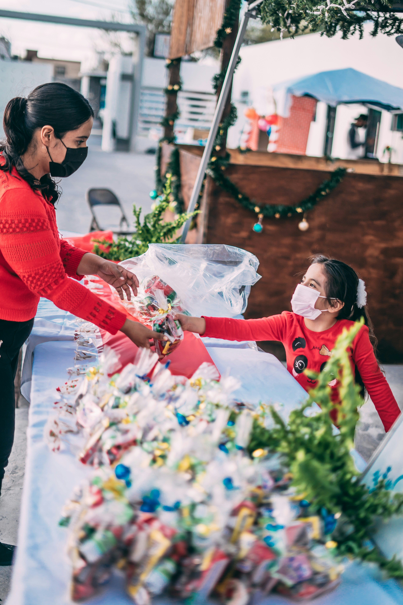
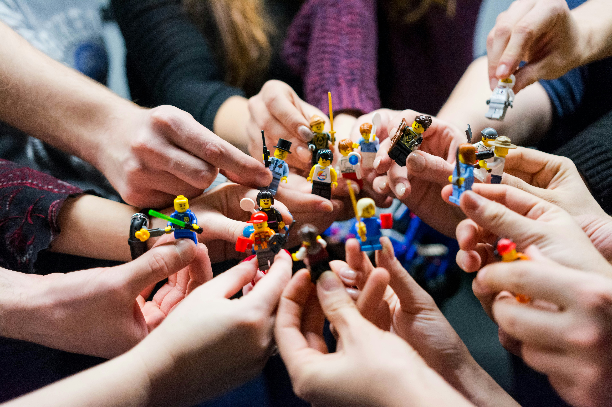
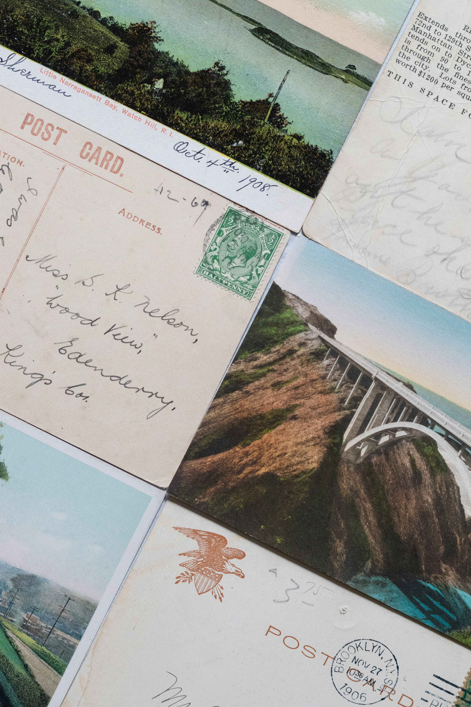

About Me
Hello! My name is Veronica Serna. I am a dedicated professional with a background in law enforcement, leadership, and community service. I am currently pursuing my bachelor's degree in Organizational Leadership at Texas Tech University.
Beyond my professional career, I enjoy bringing people together, planning meaningful events, and creating lasting memories with family and friends. I believe strong leadership begins with communication, compassion, creativity, and a genuine desire to make a positive difference.
Skills & Interests
Leadership & Communication
Building trust, encouraging teamwork, and communicating effectively to achieve shared goals.
Event Planning & Coordination
Organizing meaningful events, coordinating volunteers, and creating memorable experiences.
Community Involvement
Supporting community outreach, building relationships, and making a positive difference through service.
Creativity & Personal Interests
Enjoying family traditions, baking, celebrations, and creative projects that capture special memories.
My Projects

Community Event Planning
Helping organize community events, coordinate volunteers, and create meaningful experiences that bring people together.

Leadership & Team Collaboration
Supporting teamwork, effective communication, and collaboration to accomplish shared goals.

Creative Projects & Memories
Exploring creativity through photography, storytelling, and projects that celebrate family traditions and special moments.